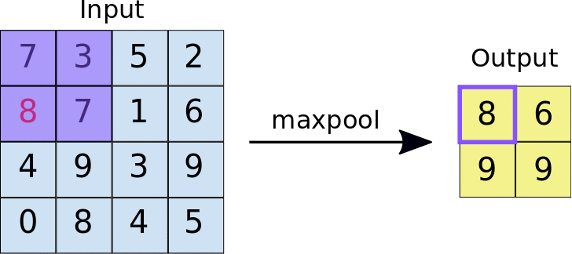
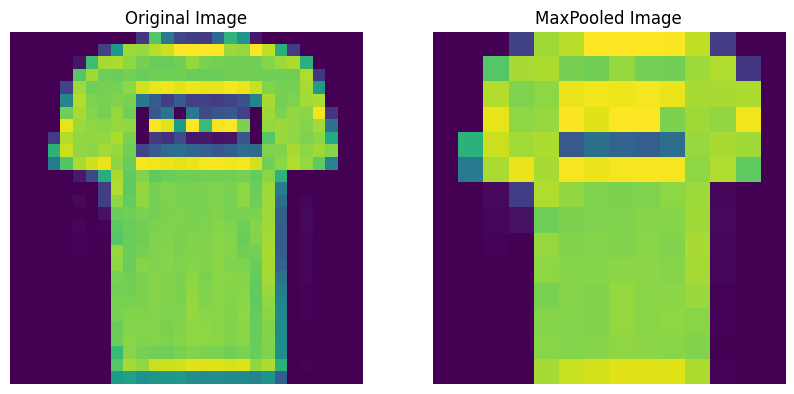
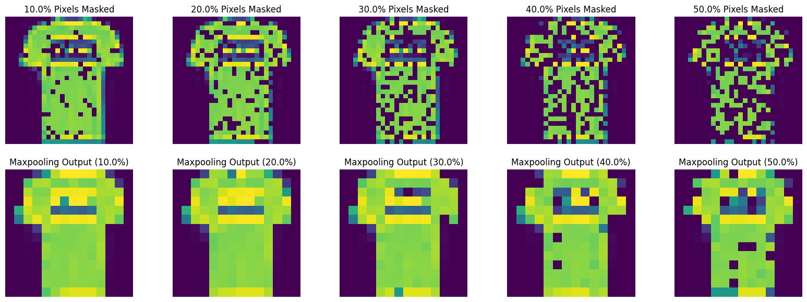
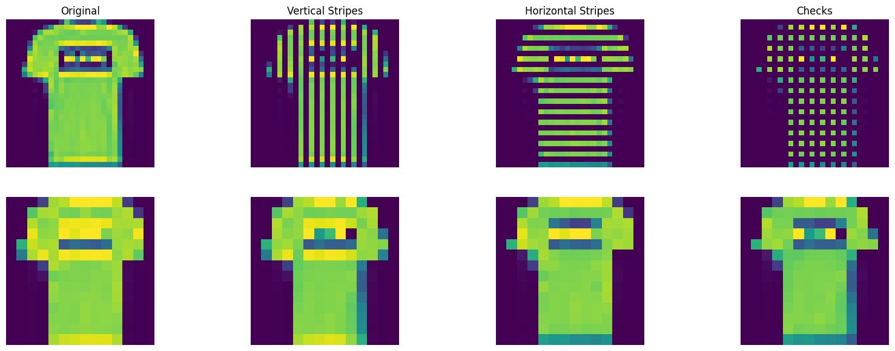
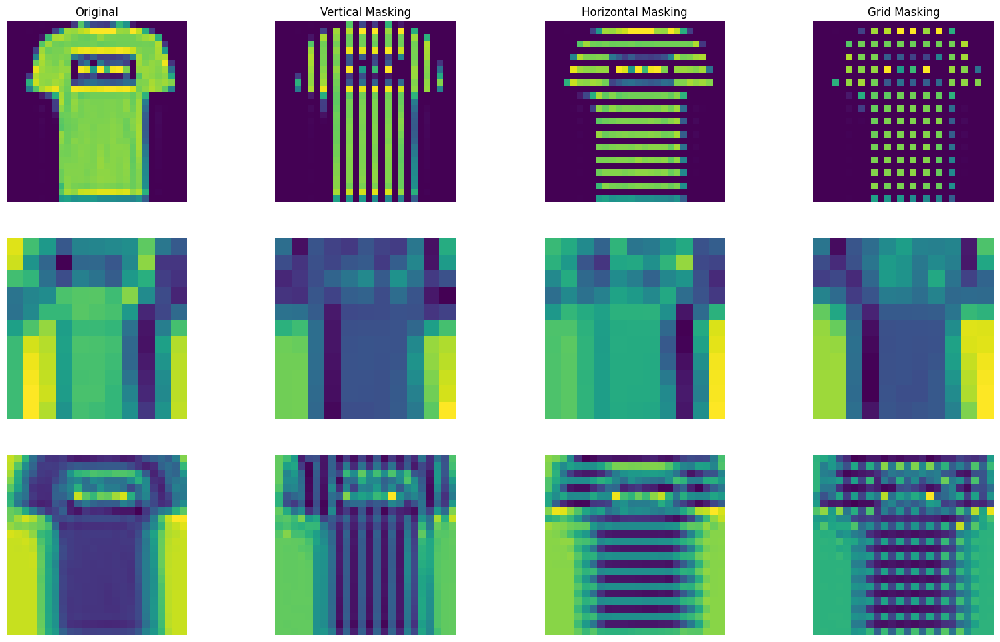
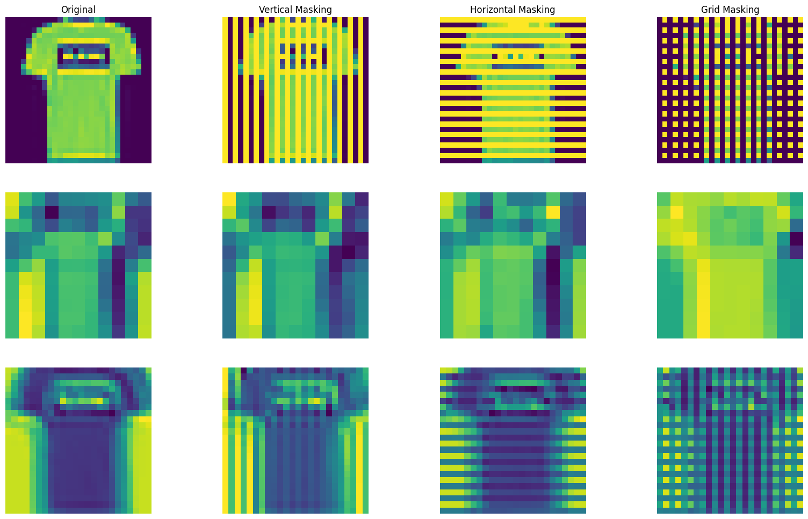

Rethinking Pooling Layers

When you first learn about convolutional neural networks (CNNs), pooling layers are often perceived as nothing more than supporting layers that reduce the dimensionality of data. The focus, typically centers on convolutional layers, which are often regarded as the "workhorses" (main components) behind the models. On the other hand, pooling layers appear to serve a simpler, more mechanical role—merely condensing input data by downsampling.
However, Pooling layers do far more than just reduce dimensionality.
Their real power lies in the subtle yet crucial property they introduce into the network—approximate invariance. In fact, the invariance introduced by pooling layers might be even more crucial to a CNN’s success than many realize, making them essential to the network's overall performance.
What is Invariance?
Invariance refers to a system’s ability to remain stable and unaltered despite transformations or variations in its input.
Why do we even need Invariance?
Invariance is critical in real-world applications, especially in image recognition, where the same object can appear in a variety of forms. Consider a series of photos of a cat: in one image, the cat might be curled up under a table or, it's illuminated by different lighting or the cat is slightly turned. To the human brain (a gigantic neural network), these are trivial changes.
However, in a artificial neural network, every minor shift—be it a pixel-level variation or a slight translation—could throw off the model’s recognition ability. This is where the pooling layer steps in, ensuring that the model focuses on the key features of the input, regardless of small transformations or perturbations.
How do pooling layers introduce "Approximate Invariance"

(Right) After max pooling, the image is simplified, retaining only the dominant features (like the t-shirt’s outline).
Pooling layers consolidate information (features), condensing regions of the image and distilling the most important aspects. Pooling, especially max pooling, does this by selecting the dominant value in a small patch of the input, the pixel with the highest intensity. This dominant value usually corresponds to the most critical feature within that region.
In practice, this means that when a small part of an image is shifted or altered, the dominant feature in that region is likely to stay the same, keeping the network’s response consistent. This allows the model to generalize more effectively by disregarding minor changes that don’t impact the overall structure of the image.
As a result, pooling layers provide the network with approximate translational invariance. By making CNNs less sensitive to small, local variations, pooling layers smooth out irrelevant details and allow the model to concentrate on the larger, more significant patterns. In this way, pooling layers add a layer of stability to the unpredictable nature of real-world inputs, helping the network avoid overreacting to every minor change.
Let us see how this operates in practice...
To explore how well max pooling layers handle real-world imperfections, I simulated minor aberrations and noise in images by masking portions of them. This allowed me to test how resilient max pooling is when faced with such distortions.
Random Masking

In the first test, I introduced random masking(1)to the image by setting various portions of the pixels to zero (in proportions of 0.1, 0.2, 0.3, 0.4, and 0.5). Despite this random masking, the max pooling layer successfully overlooked these aberrations and was able to filter out the noise, but retained the primary structure of the object in the image as same despite the amount of masking.
- These maskings are meant to resemble real life noise.
Patterned Masking

In the second test, I applied a more structured form of masking by creating vertical and horizontal lines of occlusion across the image. Remarkably, even with this patterned masking, the max pooling layer continued to filter out these distortions and preserve the shape of the object. Further, by even introducing a more complex grid-like pattern by combining both vertical and horizontal masking, the max pooling layer still performed effectively, ignoring the structured noise and focusing on the main features of the T-shirt.
Adding Convolution into the picture
To deepen the analysis, I extended the analysis by building two simple CNN models: one with a max pooling layer between two convolutional layers (1), and another without any pooling (2).
-
Conv(2x2) -> MaxPool(2x2, stride=1) -> Conv(2x2)
-
Conv(2x2) -> Conv(2x2)

More info
(Row 1) Input images
(Row 2) Output by model with no Pooling layers (1)
(Row 3) Output by model with a Pooling layer (2)
- As you can see, all the abberations/noise (masked lines) are missing
- As you can see, all the abberations/noise (masked lines) are carried forward by network
The CNN model without max pooling exhibited the tendency to capture and propagate the unwanted noise and aberrations that we wanted our network to ignore. In contrast, the CNN model with max pooling was able to filter out these irrelevant patterns, focusing more on the general structure of the object. This demonstrates how max pooling provides an essential safeguard against the network overfitting to small, irrelevant variations in the data.

More info
(Row 1) Input images
(Row 2) Output by model with no Pooling layers (1)
(Row 3) Output by model with a Pooling layer (2)
- As you can see, all the abberations/noise (masked lines) are missing
- As you can see, all the abberations/noise (masked lines) are carried forward by network
One potential critique of these experiments is the interaction between masking (setting pixel values to zero) and the function of max pooling, which selects the maximum-valued pixel in each region. To address this, I conducted a follow-up test using inverse masking, where I maxed out pixel values instead of setting them to zero. This approach introduces aberrations in a way that could potentially confuse the network differently.
Once again, the CNN model without max pooling captured these aberrations and passed them through the layers, while the model with max pooling, however, remained largely unaffected by these noisy regions and continued to focus on the main features of the image.
Approximate, Not Absolute
However, it’s important to note that pooling layers don’t provide perfect invariance. Their capacity to smooth over local variations is only approximate. The network is still dependent on the structure of the input, and if the transformation becomes too large—such as a significant rotation or a drastic shift—the pooling layer alone won’t be able to maintain stability in the output.
In conclusion, while convolutional layers are typically viewed as the "workhorses" of CNNs, it is the pooling layers that introduce an essential property, allowing these networks to function more reliably in real-world environments. By embedding approximate invariance, pooling layers ensure that CNNs stay focused on the most critical features and aren't derailed by trivial variations. Far from being passive tools for dimension reduction, pooling layers play a crucial role in shaping the network's ability to generalize and maintain stability, making them indispensable to the overall success of CNNs.